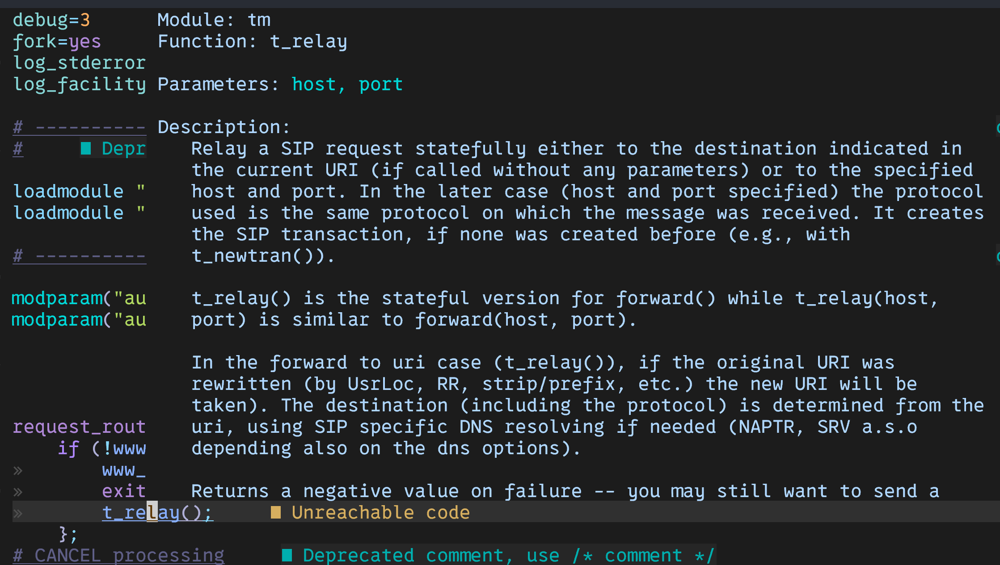

Writing LSP for kamailio_cfg p1
Writing LSP for Kamailio.cfg - Part 1
In the previous post, i used the tree-sitter parser to parse the kamilio.cfg file for syntax highlighting. Since the tree-sitter also generates the go bindings for the parser, i thought it would be a good idea to use the parser to generate the LSP for the kamailio.cfg file.
For this reason i went back to the grammar i had written for the kamailio.cfg file and made it a bit more specific since that would help identifying the different nodes when im writing the LSP.
First and foremost, I am going to target Hover feature, I will look into more features as i go along. For this what i want from the LSP is to be able to hover over a token and get the information about the token. For now i’ll consider only the function documentation.
Name
I have named the LSP server as KamaiZen. The name is a play on the words Kamailio and Zen. The server is written in Go and uses the go bindings generated by the tree-sitter parser. Github repo for the project is here.
Directory Structure
Following is the directory structure i have for the project:
.
├── README.md
├── kamailio_cfg
│ ├── binding.go
│ ├── binding_test.go
│ ├── parser.c
│ └── treesitter
│ ├── alloc.h
│ ├── array.h
│ └── parser.c
├── lsp
│ ├── initialize.go
│ ├── message.go
│ ├── textDocument.go
│ ├── textDocument_open.go
│ ├── textDocument_hover.go
│ └── writer.go
├── docs
│ └── server.go
├── analysis
│ ├── analysis.go
│ ├── formatter.go
│ └── state.go
├── rpc
│ └── rpc.go
└── utils
└── logger.go
kamailio_cfg
This directory contains the go bindings for the tree-sitter parser. Main two files to consider are binding.go and parser.c.
- The
parser.cfile is the file generated by the tree-sitter parser. - The
binding.gofile contains the go bindings for the parser.
rpc
This directory contains the rpc server. The main file to consider is rpc.go.
- The
rpc.gofile contains the Encode Decode functions for the messages that are sent and received by the LSP server.
lsp
This directory contains the LSP server. The main files to consider are initialize.go, message.go, textDocument.go, textDocument_open.go, textDocument_hover.go and writer.go.
- The
initialize.gofile contains the initialize function for the LSP server. - The
message.gofile contains the message struct for the LSP server. - The
textDocument.gofile contains the textDocument struct for the LSP server. - The
textDocument_open.gofile contains the open function for the LSP server. - The
textDocument_hover.gofile contains the hover function for the LSP server. - The
writer.gofile contains the writer function for the LSP server.
analysis
This directory will contain the analysis done on the source code. It will be able to proide the user with diagnostics and code completion.
docs
This is the directory where the documentation for the kamailio functions/modules will be parsed and stored and on hover the information will be displayed. We will focus on this one in this post.
Let’s get started
-
You can watch youtube video Learn By Building: Language Server Protocol by TJ DeVries to get a better understanding of how to write an LSP server. I found it very helpful starting out on this.
-
I’ll skip straight to parsing the kamailio docs and the hover feature.
Parsing the Kamailio Docs
For parsing the kamailio docs, I have gone with the README files present in each modules directory, and as stated earlier im focusing on the function definitions for now.
I have following structure for the docs:
var moduleDocsCache = make(map[string]ModuleDocs)
type FunctionDoc struct {
Name string
Parameters string
Description string
Example string
}
type FunctionDocs struct {
Functions map[string]FunctionDoc
}
type ModuleDocs struct {
Functions map[string]FunctionDocs
}
FunctionDoccontains the name of the function, the parameters, the description and an example.FunctionDocscontains a map ofFunctionDocwith the key as the function name.ModuleDocscontains a map ofFunctionDocswith the key as the module name.
The idea is that on startup the LSP server will parse the README files and store the information in the moduleDocsCache map. When a hover request is made, the server will look up the function in the cache and return the information.
The function is called on startup and is as follows:
func Initialise(s settings.LSPSettings) {
path := s.KamailioSourcePath() + "/src/modules"
listOfModules, err := os.ReadDir(path)
if err != nil {
fmt.Println("Error reading directory")
return
}
// Get All Modules
for _, module := range listOfModules {
// Parse README file for each module
readme, err := os.ReadFile(path + "/" + module.Name() + "/README")
if err != nil {
fmt.Println("Error reading file")
return
}
moduleDocs := NewModuleDocs()
functionDocs := extractFunctionDoc(strings.Split(string(readme), "\n"))
functionDocsMap := FunctionDocs{Functions: make(map[string]FunctionDoc)}
for _, functionDoc := range functionDocs {
functionDocsMap.AddFunctionDoc(functionDoc)
}
moduleDocs.AddFunctionDoc(module.Name(), functionDocsMap)
moduleDocsCache[module.Name()] = moduleDocs
}
}
The main function responsible for extracting the documentation is extractFunctionDoc which is as follows:
func extractFunctionDoc(lines []string) []FunctionDoc {
funcPattern := regexp.MustCompile(`^\s*\d+\.\d+\.\s*(\w+)\((.*)\)\s*$`)
var functionDocs []FunctionDoc
var functionDoc FunctionDoc
var inExample bool
var example string
var exampleLineCount int
for _, line := range lines {
if match := funcPattern.FindStringSubmatch(line); match != nil {
if functionDoc.Name != "" {
functionDocs = append(functionDocs, functionDoc)
}
functionDoc = FunctionDoc{Name: match[1], Parameters: match[2]}
inExample = false
example = ""
} else if functionDoc.Name != "" {
if !inExample {
// example has indentation of some spaces
if strings.Contains(line, "Example") {
inExample = true
} else {
functionDoc.Description += line + "\n"
}
} else {
if strings.Contains(line, "...") {
exampleLineCount++
// end of example if there are 2 lines
if exampleLineCount == 2 {
inExample = false
}
functionDoc.Example = example
} else {
example += line + "\n"
}
}
}
}
if functionDoc.Name != "" {
functionDocs = append(functionDocs, functionDoc)
}
return functionDocs
}
The function uses a regular expression to match the function definition and then extracts the parameters and the description. The function also extracts the example if it is present.
Hover Feature
The hover feature request and response are defined in the textDocument_hover.go file.
type HoverRequest struct {
Request
Params HoverParams `json:"params"`
}
type HoverParams struct {
TextDocuemntPositionParams
}
type HoverResponse struct {
Response
Result *Hover `json:"result"`
}
type Hover struct {
Contents MarkupContent `json:"contents"`
Range *Range `json:"range,omitempty"`
}
func NewHoverResponse(id int, contents string) HoverResponse {
return HoverResponse{
Response: Response{
RPC: "2.0",
ID: id,
},
Result: &Hover{
Contents: MarkupContent{
Kind: "markdown",
Value: contents,
},
},
}
}
When a hover request is made, the following block of code is executed:
func handleMessage(writer io.Writer, logger *log.Logger, state analysis.State, method string, contents []byte, analyser_channel chan analysis.State) {
logger.Println("Received message with method: ", method)
switch method {
case MethodInitialize:
...
case MethodDidOpen:
...
case MethodHover:
var request lsp.HoverRequest
if error := json.Unmarshal(contents, &request); error != nil {
logger.Println("Error unmarshalling hover request: ", error)
return
}
logger.Println("Hover request for document with URI: ", request.Params.TextDocument.URI)
response := state.Hover(request.ID, request.Params.TextDocument.URI, request.Params.Position)
logger.Printf("Sent hover response %v", response)
lsp.WriteResponse(writer, response)
case MethodDidChange:
...
case MethodDefinition:
...
case MethodFormatting:
...
}
}
The Hover method is called on the state object which is responsible for returning the hover response.
type State struct {
// Key: URI, Value: Text content
Documents map[lsp.DocumentURI]string
}
func (s *State) Hover(id int, uri lsp.DocumentURI, position lsp.Position) lsp.HoverResponse {
text := s.Documents[uri]
functionName := GetFunctionNameAtPosition(uri, position, []byte(text))
documentation := docs.FindFunctionInAllModules(functionName)
return lsp.NewHoverResponse(id, fmt.Sprintf("%s", documentation))
}
Here the State is a map of URI to Text content. The Hover method gets the text content for the URI and then gets the function name at the position. The function name is then used to get the documentation from the moduleDocsCache map.
GetFunctionNameAtPosition
func GetFunctionNameAtPosition(uri lsp.DocumentURI, position lsp.Position, source_code []byte) string {
node := stateTreeCache.nodes[uri]
return getFunctionName(node, position, source_code)
}
func getFunctionName(node *sitter.Node, position lsp.Position, source_code []byte) string {
nodeAtPosition := node.NamedDescendantForPointRange(
sitter.Point{
Row: uint32(position.Line),
Column: uint32(position.Character),
},
sitter.Point{
Row: uint32(position.Line),
Column: uint32(position.Character),
})
functionName := nodeAtPosition.Content(source_code)
return functionName
}
Here we use out stateTreeCache to get the node at the position and then get the content of the node which is the function name. This cache is populated when the document is opened. This is simply a map of URI to Node. The Node here represents the go-tree-sitter node. So the tree is going to be exactly like what we used in the parser for syntax highlighting.
FindFunctionInAllModules
func FindFunctionInAllModules(functionName string) string {
for moduleName, moduleDocs := range moduleDocsCache {
if _, exists := moduleDocs.Functions[moduleName].Functions[functionName]; exists {
return "Module: " + moduleName + "\n" + moduleDocs.GetFunctionDocAsString(moduleName, functionName)
}
}
return "Function not found"
}
This function iterates over the moduleDocsCache map and checks if the function exists in any of the modules. If it does, it returns the documentation for the function. The cache is populated on startup.
StateTreeCache
The StateTreeCache is populated when the document is opened. The Open method is called when a document is opened.
type Parser struct {
parser *sitter.Parser
language *sitter.Language
tree *sitter.Tree
}
func NewParser() *Parser {
return &Parser{
parser: sitter.NewParser(),
}
}
func (p *Parser) SetLanguage() {
p.language = sitter.NewLanguage(kamailio_cfg.Language())
p.parser.SetLanguage(p.language)
}
func (p *Parser) GetLanguage() *sitter.Language {
return p.language
}
func (p *Parser) Parse(sourceCode []byte) *sitter.Node {
tree, _ := p.parser.ParseCtx(context.Background(), nil, sourceCode)
p.tree = tree
n := p.tree.RootNode()
return n
}
func (p *Parser) GetTree() *sitter.Tree {
return p.tree
}
func (p *Parser) UpdateTree(content []byte) {
newTree, _ := p.parser.ParseCtx(context.Background(), p.tree, content)
p.tree = newTree
}
type StateTree struct {
nodes map[lsp.DocumentURI]*sitter.Node
}
// module level state tree
var stateTreeCache StateTree
func NewStateTree() StateTree {
return StateTree{
nodes: make(map[lsp.DocumentURI]*sitter.Node),
}
}
func (s *StateTree) AddNode(uri lsp.DocumentURI, node *sitter.Node) {
s.nodes[uri] = node
}
func StartAnalyser(c <-chan State, writer io.Writer, logger *log.Logger, wg *sync.WaitGroup) {
defer wg.Done()
parser := NewParser()
parser.SetLanguage()
stateTree := NewStateTree()
logger.Println("=====Analyser started")
for {
select {
case state, ok := <-c:
if !ok {
logger.Println("Channel closed! Exiting...")
return
}
for uri, content := range state.Documents {
node := parser.Parse([]byte(content))
//...
stateTreeCache = stateTree
}
}
}
}
The Parser uses the kamailio_cfg language parser, this is the same parser that was used for syntax highlighting. The StateTree is a map of URI to Node. The Node is the go-tree-sitter node. The StartAnalyser function is responsible for populating the StateTreeCache when the document is opened.
We use this same cache to get the node at the position when the hover request is made.
In Action
The hover feature in action:

Conclusion
I still have yet to update the design of the LSP server and add more features. I will be looking into the diagnostics and code completion after i have fine-tuned this.
Also in terms of design, i will be looking into the golang.org/x/tools/internal/lsp package to see how they have implemented the LSP server.
I will be updating the github repo with the latest changes. You can find the repo here.